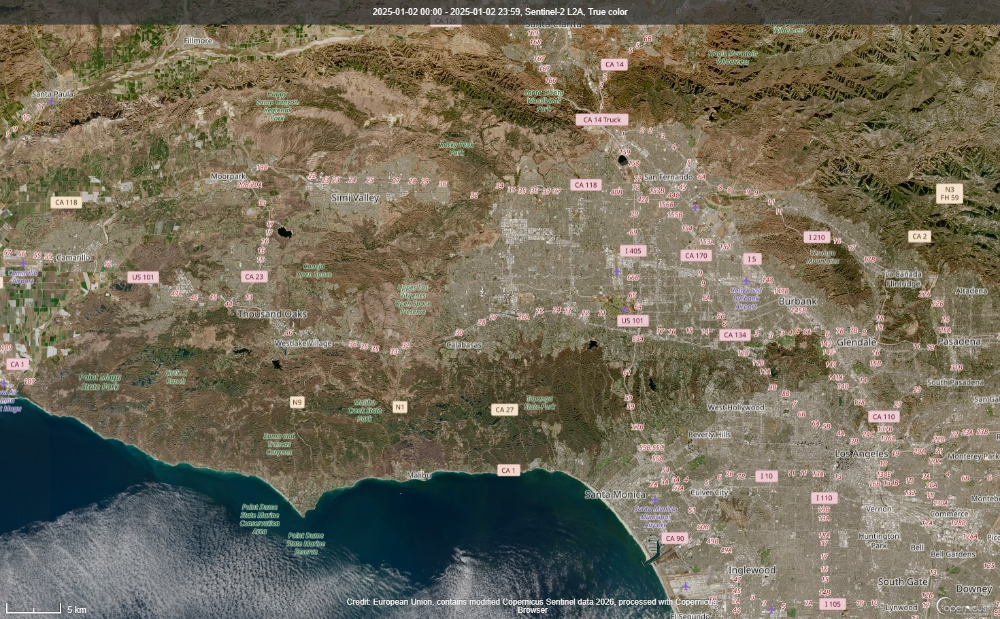
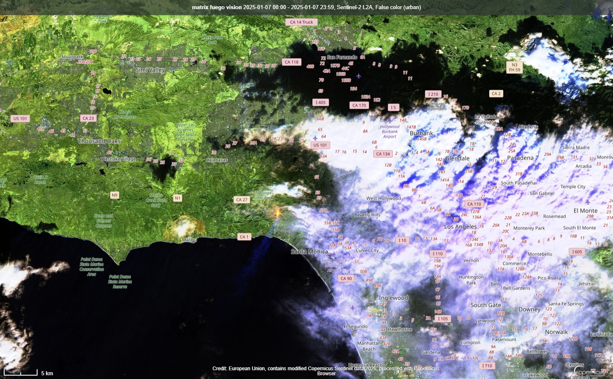
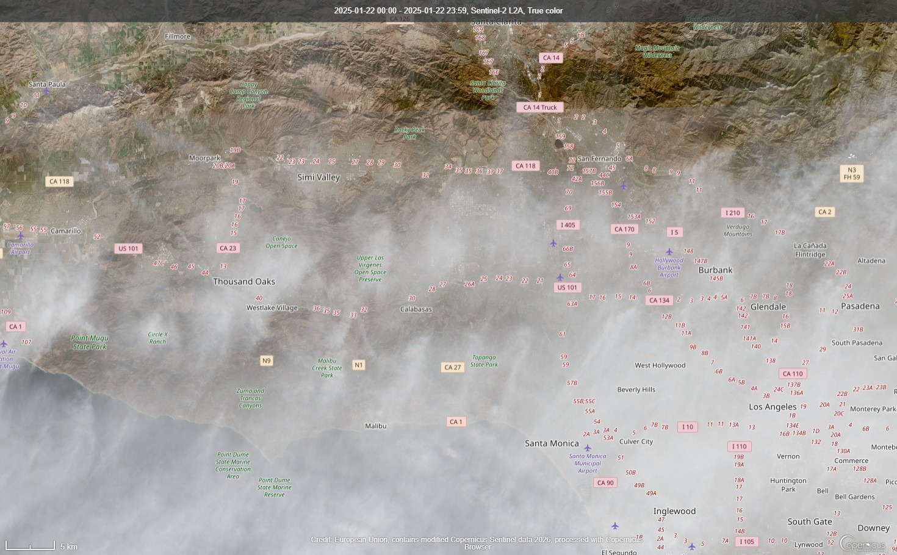

Progetto di Educazione Civica · 2025/2026
Gli Incendi di Los Angeles 2025: Cause, Impatti e Futuro del Pianeta
Esplora il Progetto01 — Introduzione
Nel gennaio 2025, Los Angeles è stata devastata da una serie di incendi di proporzioni eccezionali. Alimentati da venti Santa Ana straordinariamente violenti, da una siccità prolungata e da un territorio progressivamente indebolito dal cambiamento climatico, i roghi hanno travolto quartieri residenziali, parchi naturali e aree periurbane con una velocità e un'intensità senza precedenti nella storia della California moderna.
Questo progetto analizza l'evento attraverso immagini satellitari multitemporali acquisite dal satellite Sentinel-2 (ESA/Copernicus), integrandole con dati climatici, ambientali e sociali per comprendere le cause strutturali e gli impatti di questa catastrofe. L'obiettivo è anche riflettere sul ruolo del cambiamento climatico nell'amplificazione di fenomeni estremi.
02 — Cause
Gli incendi di LA non sono stati un evento improvviso. Sono il risultato di molteplici cause interconnesse, alcune naturali e cicliche, altre profondamente legate all'azione umana sul sistema climatico.
Venti catabatici provenienti dall'entroterra del deserto, con raffiche superiori ai 140 km/h nei giorni più critici. Questi venti secchi e caldi abbassano l'umidità relativa sotto il 5% e trasportano le braci per decine di chilometri, rendendo il fuoco incontrollabile in poche ore.
La California meridionale ha attraversato uno dei periodi più aridi degli ultimi decenni. L'assenza di piogge significative nei mesi autunnali ha trasformato la vegetazione in materiale combustibile secco e altamente infiammabile, in particolare le tipiche erbe e arbusti della chaparral.
Le temperature medie in California sono aumentate di circa 1.8°C rispetto ai valori preindustriali. Questo scalda l'aria, accelera l'evaporazione dell'acqua dal suolo e dalla vegetazione, e crea le condizioni per stagioni degli incendi più lunghe e intense, spingendosi anche in inverno.
Le aree di interfaccia urbano-rurale (Wildland-Urban Interface, WUI) di LA sono densamente abitate. Tetti di legno, recinzioni, vegetazione ornamentale infiammabile e infrastrutture elettriche a rischio hanno aumentato la vulnerabilità delle comunità e la velocità di propagazione del fuoco.
Le linee elettriche aeree, sottoposte ai venti fortissimi, sono state indicate come possibile causa di innesco di alcuni focolai. Southern California Edison e Pacific Gas & Electric hanno ricevuto accuse di non aver tempestivamente disconnesso le linee nelle zone ad alto rischio.
Decenni di politiche di soppressione degli incendi hanno impedito i fuochi controllati tradizionalmente usati per ridurre il combustibile. Questo ha portato a un accumulo di materiale organico secco che alimenta incendi più grandi e intensi rispetto al passato.
03 — Analisi Satellitare
Utilizzando le immagini multispettrali del satellite Sentinel-2 (ESA Copernicus), abbiamo potuto osservare dall'orbita i cambiamenti del territorio nell'area metropolitana di Los Angeles. Le immagini raccontano visivamente la progressione della catastrofe.

L'immagine in vera cromaticità del 2 gennaio 2025 mostra Los Angeles in condizioni normali. Il territorio appare nella sua composizione tipica invernale: zone urbane grigio-chiare, parchi collinari con vegetazione brunastra per la siccità stagionale, e le vaste aree naturali delle Santa Monica Mountains ancora intatte.
È visibile la caratteristica struttura metropolitana della conurbazione LA, con la costa a sud e le montagne a nord. L'assenza di smoke plumes e la nitidezza dell'immagine confermano condizioni atmosferiche relativamente stabili in questo periodo.
L'immagine in falso colore urbano del 7 gennaio 2025 mostra con drammatica chiarezza le aree in fiamme e i terreni già bruciati. In questa combinazione di bande (SWIR + NIR), le zone attivamente in combustione appaiono in rosso vivo, la vegetazione sana in verde brillante, e le aree bruciate come macchie nere e grigio scuro.
La grande macchia scura a nord-est di LA, verso le colline di Eaton e Altadena, è chiaramente distinguibile, così come il focolaio di Palisades a ovest. La colonna di fumo bianco-azzurra visibile al centro indica la migrazione del particolato verso l'area metropolitana.


Il 22 gennaio, l'immagine in vera cromaticità mostra la copertura di fumo sull'intera area metropolitana. Le pennacce biancastre si estendono dall'entroterra verso l'oceano Pacifico, visibili anche dall'orbita. Si distinguono le aree bruciate come chiazze brunastre prive di vegetazione nelle zone collinari.
Questa immagine evidenzia anche il cambiamento cromatico della vegetazione nelle aree adiacenti ai perimetri: da verde/beige a marrone carbonioso. La vasta estensione del fumo testimonia la qualità dell'aria estremamente compromessa che ha caratterizzato queste settimane per milioni di residenti.
04 — Effetti
Gli incendi di Los Angeles hanno generato impatti su scala multipla: dall'ecosistema locale alla qualità dell'aria respired da milioni di persone, dal tessuto sociale dei quartieri all'economia regionale.
La chaparral californiana, ecosistema arbustivo adattato al fuoco periodico, è stata distrutta su decine di migliaia di ettari. Le specie endemiche, pur con capacità di rigenerazione, faticano a riprendersi quando i cicli di fuoco si accorciano drasticamente oltre la loro tolleranza biologica.
Le Santa Monica Mountains ospitano una biodiversità significativa, inclusi puma, cervi e numerose specie di rapaci. Gli incendi hanno frammentato ulteriormente gli habitat già ridotti dall'urbanizzazione, aumentando la pressione sulle popolazioni animali residue e il rischio di estinzione locale.
La distruzione della copertura vegetale espone i versanti collinari all'erosione. Dopo gli incendi, le piogge invernali rischiano di causare colate detritiche (debris flow) che minacciano le abitazioni a valle. Il suolo bruciato perde la sua capacità di assorbire acqua, diventando impermeabile.
Gli incendi hanno immesso nell'atmosfera quantità enormi di CO₂ e particolato fine (PM2.5). Secondo le stime iniziali, la combustione ha rilasciato emissioni equivalenti a quelle di milioni di automobili circolanti per un intero anno, aggravando localmente la crisi climatica.
Migliaia di abitazioni sono state completamente distrutte nei quartieri di Pacific Palisades, Altadena ed Eaton. Intere strade sono state radiate al suolo, cancellando comunità residenziali in poche ore. La perdita di case storiche e di luoghi identitari ha generato un trauma sociale profondo.
Per settimane, l'indice AQI (Air Quality Index) di Los Angeles ha raggiunto livelli "Pericolosi" (>300). Il PM2.5 e le particelle di fumo hanno causato picchi di ricoveri ospedalieri per patologie respiratorie, colpendo in modo sproporzionato bambini, anziani e persone con patologie pregresse.
I vigili del fuoco di Los Angeles County hanno fronteggiato contemporaneamente più incendi attivi, con risorse umane e materiali ai limiti. La risposta di emergenza ha richiesto il supporto di rinforzi da altri stati americani e la mobilitazione della Guardia Nazionale.
Con stime iniziali che superano i 275 miliardi di dollari, gli incendi di LA 2025 sono tra i più costosi nella storia degli Stati Uniti. L'impatto economico include non solo la distruzione materiale, ma anche la perdita di attività commerciali, il calo del turismo e i costi sanitari a lungo termine.
05 — Clima & Futuro
Gli incendi di Los Angeles non possono essere compresi senza inserirli nel contesto più ampio della crisi climatica. La scienza del riconoscimento dell'attribuzione climatica (climate attribution science) dimostra con crescente certezza che il cambiamento climatico antropico ha reso eventi come questi più probabili, più intensi e più devastanti.
Il meccanismo è chiaro: temperature più alte → evaporazione più rapida → suolo e vegetazione più secchi → combustibile più abbondante e infiammabile. A questo si aggiunge l'intensificazione dei venti estremi legata alle variazioni dei gradienti termici tra oceano e deserto, favorite anche dal riscaldamento globale.
La California ha già stabilito piani ambiziosi di riduzione delle emissioni (obiettivo zero emissioni entro 2045), ma gli impatti già incorporati nel sistema climatico richiederanno decenni di adattamento. Le città devono ripensare la propria relazione con il territorio naturale circostante.
06 — Conclusioni
Gli incendi di Los Angeles del gennaio 2025 rappresentano un evento-spartiacque nella storia ambientale americana. Per la prima volta, una città di primissimo piano globale ha visto quartieri interi cancellati dal fuoco in poche ore, con uno shock collettivo che ha rimesso in discussione modelli di urbanizzazione, gestione del territorio e politiche climatiche.
Attraverso l'analisi delle immagini satellitari Sentinel-2, abbiamo potuto vedere con i nostri occhi — dall'orbita — come il paesaggio dell'area metropolitana sia cambiato in pochi giorni. La potenza dello strumento satellitare permette di oggettivare la portata di eventi che altrimenti potrebbero sembrare distanti.
Il cambiamento climatico non è più una questione del futuro. È una realtà presente che riscrive la geografia del rischio. Los Angeles 2025 è un avvertimento che riguarda ogni territorio vulnerabile al fuoco, alla siccità, alle alluvioni o alle ondate di calore — inclusa l'Italia.
Come studenti e futuri cittadini, riteniamo che la conoscenza di questi fenomeni sia il primo passo per agire. Non come singoli individui, ma come parte di comunità e sistemi politici che devono scegliere tra continuare come prima o cambiare rotta in modo radicale e tempestivo.
Progetto realizzato per il corso di Educazione Civica · Anno Scolastico 2025/2026
Dati: ESA Copernicus / Sentinel-2 · NASA FIRMS · CALFIRE · NOAA
07 — Fonti
Il progetto si basa su fonti istituzionali, scientifiche e giornalistiche verificate. Le immagini satellitari sono open data forniti dall'Unione Europea attraverso il programma Copernicus.
Immagini satellitari multispettrali open access. Browser: browser.dataspace.copernicus.eu. Credit: European Union, modified Copernicus Sentinel data 2025.
Dati ufficiali su perimetri degli incendi, ettari bruciati, risorse impegnate. fire.ca.gov
Dati meteorologici: velocità venti, umidità relativa, temperature. weather.gov/losangeles
Dati sul cambiamento climatico globale e regionale, attribuzione degli eventi estremi. ipcc.ch
Copertura giornalistica degli incendi: dati sulle evacuazioni, danni economici, risposta istituzionale. latimes.com
Analisi scientifica sull'attribuzione climatica degli incendi di Los Angeles 2025. worldweatherattribution.org
Dati satellitari in tempo reale sulle aree di combustione attiva. firms.modaps.eosdis.nasa.gov
Dati sulla qualità dell'aria e indici AQI durante il periodo degli incendi. airnow.gov